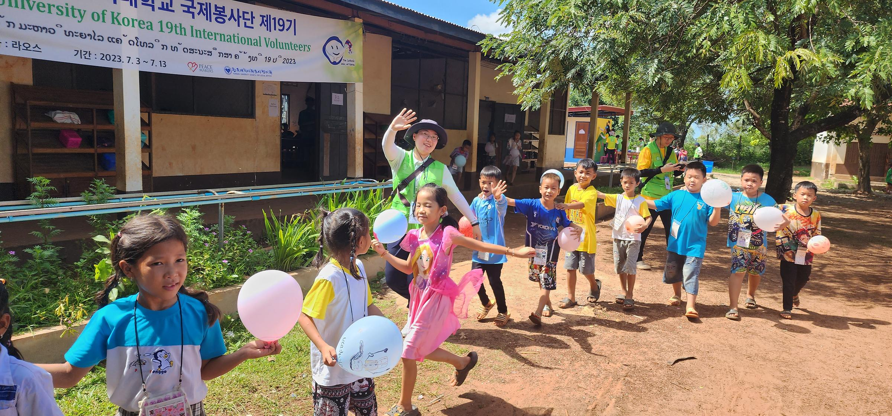
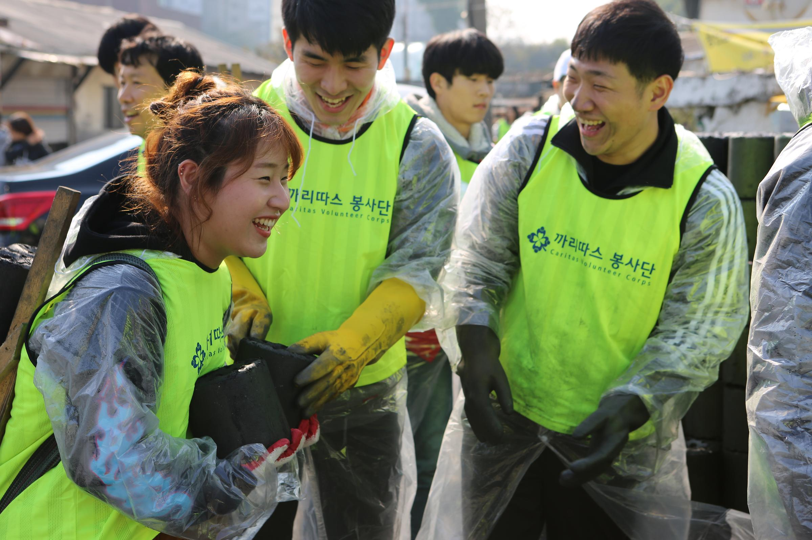

국제봉사단
가톨릭대학교 국제봉사단은 대학의 교육이념인
‘진리ㆍ사랑ㆍ봉사’ 정신을 바탕으로 ‘나눔의 세계화’를
실천하고 있습니다. 봉사에 참여하는 학생들은 젊음과
열정을 가지고 나눔과 배려를 직접 실천하여 봉사의
가치를 이해하고, 이러한 경험을 바탕으로 섬김의
리더십을 갖춘 글로벌 리더로 성장하고 있습니다.
1997년부터 매년 여름방학을 이용하여 파푸아뉴기니,
필리핀, 우즈베키스탄, 몽골, 캄보디아, 라오스 등 제
3세계 국가에 교수, 직원, 학생으로 구성된 봉사단을
파견하고 있습니다.

까리따스봉사단
“가자! 가장 낮은 곳으로!” 라는 구호로 우리 사회의 가장
낮은 곳과 함께하고 있는 가톨릭대학교 까리따스봉사단은
2015년 11월 창단하여 다양한 지역사회공헌 활동을
진행하고 있습니다. 학생과 교직원으로 구성된
까리따스봉사단은 인근 요양원 봉사를 시작으로 독거노인
도시락 배달, 청소년 학업 지원활동, 연탄 나눔 등
지역사회 발전을 위해 활발한 봉사활동을 펼치고
있습니다.

사랑나누기(기초교양필수 교과목)
학부대학 산하 ‘사랑나누기센터’에서는 학생들이
봉사활동을 통하여 개인의 올바른 자기실현과 공동체
정신을 회복, 구현할 수 있도록 ‘사랑나누기’ 사회봉사
교과목을 운영하고 있습니다. ‘사랑나누기’는 2012학년도
입학생부터 적용되는 기초교양필수 교과목으로 2013학년도
2학기에 개설되었습니다. 이론교육 5시간과 봉사활동
36시간 등 총 41시간으로 구성된 2학점 과목입니다.
사랑나누기+
1996년에 시작된 ‘사랑나누기+’ 교과목은 가톨릭대의
교육이념인 ‘진리, 사랑, 봉사’ 정신에 입각한 인성교육의
토대를 이루고 있습니다. 사랑나누기+ 교과목은 전교생을
대상으로 운영되는 사회봉사과목(1학점)으로 학기뿐
아니라 방학 중에도 이수할 수 있습니다. 학생들은 30시간
이상의 봉사활동을 통해 올바른 자기실현과 봉사정신을
체득할 수 있습니다.